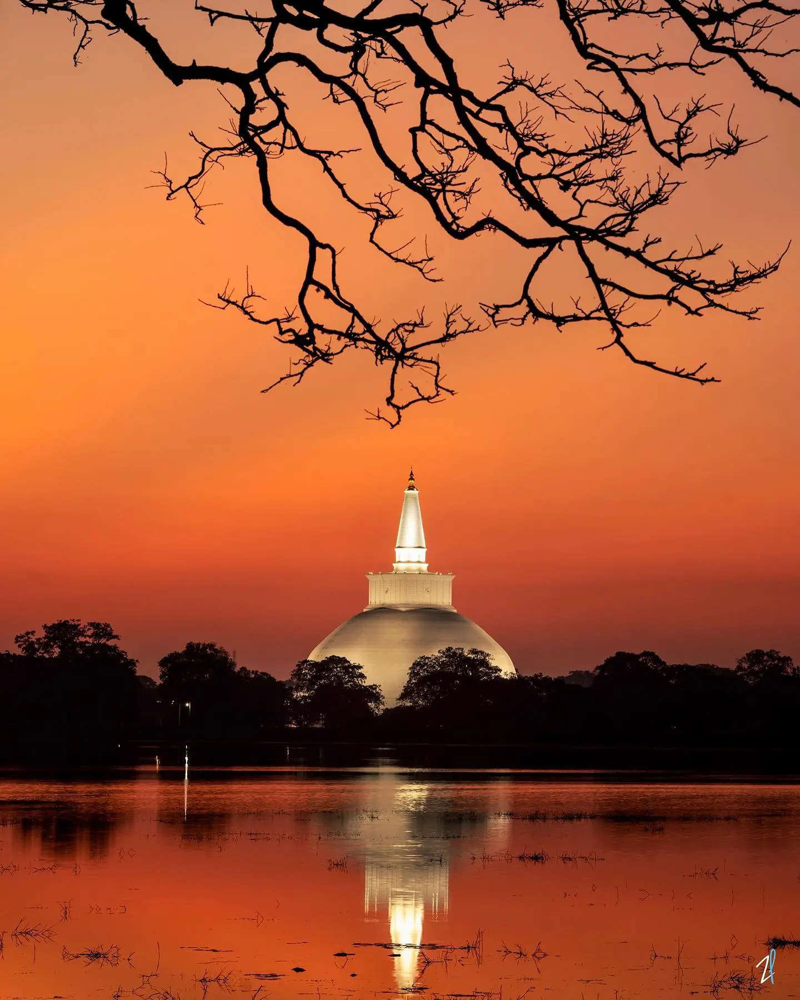
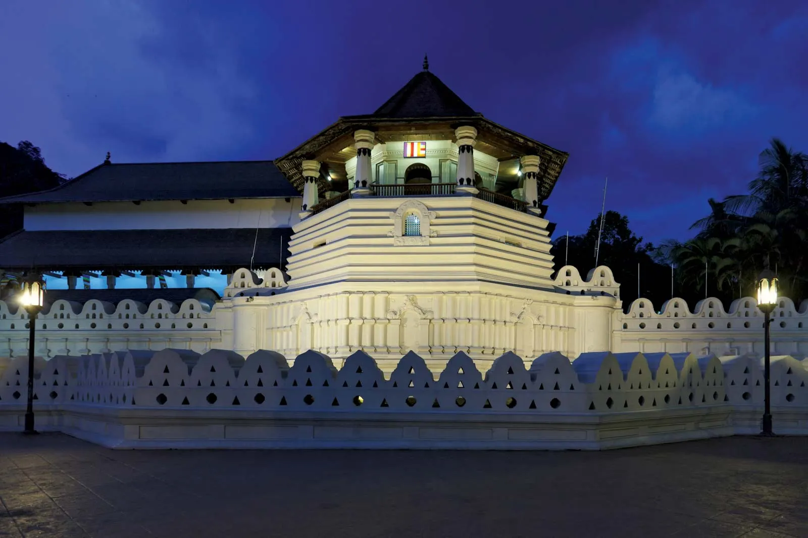

HeritageAYUBOWAN • WELCOME TO PARADISE
Your Journey Begins in Sri Lanka
From golden beaches and misty mountains to ancient cities and thrilling wildlife safaris, discover the wonders of the Pearl of the Indian Ocean.
START EXPLORING
Where would you like to go?
Find your perfect destination in Sri Lanka.
THE PEARL OF THE INDIAN OCEAN
One Island. Endless Experiences.
Sri Lanka is a tropical island filled with extraordinary experiences. Discover ancient heritage, scenic train journeys, tropical beaches, wildlife adventures and unforgettable local hospitality.
🏖️
Golden Beaches
Relax beside beautiful tropical coastlines.
🐘
Wildlife Safaris
Explore national parks and natural habitats.
🏛️
Ancient Heritage
Discover centuries of history and culture.
🌿
Hill Country
Experience tea estates and misty mountains.
PLACES TO DISCOVER
View All Destinations →
Popular Destinations
Start your journey with some of Sri Lanka's most memorable places.

CultureKandy
Experience cultural heritage, scenic landscapes and the famous Temple of the Tooth.
Discover More →
Nature
Explore the Highlands
Enjoy scenic mountain landscapes, cool weather and beautiful viewpoints.
Discover More →
FIND YOUR ADVENTURE
How Do You Want to Explore?
Choose the experiences that make your Sri Lankan holiday unforgettable.
Beaches & Surfing
Discover tropical beaches, coastal towns and exciting water activities.
Explore →Wildlife & Safari
Visit national parks and experience Sri Lanka's remarkable wildlife.
Explore →History & Heritage
Discover ancient kingdoms, temples and UNESCO heritage sites.
Explore →Culture & Festivals
Learn about local traditions, celebrations and cultural experiences.
Explore →
TRAVEL INSPIRATION
Plan Your Sri Lanka Adventure
Not sure where to start? Explore these sample travel routes.
5 DAYS
Culture & Hill Country
A short journey combining historic landmarks and mountain scenery.
- Day 1 — Sigiriya
- Day 2 — Dambulla & Kandy
- Day 3 — Kandy
- Day 4 — Nuwara Eliya
- Day 5 — Ella
7 DAYS
Nature, Safari & Beaches
A scenic journey through the highlands, wildlife areas and coast.
- Day 1 — Kandy
- Day 2 — Nuwara Eliya
- Day 3 — Ella
- Day 4 — Ella
- Day 5 — Yala area
- Day 6 — Mirissa
- Day 7 — Galle
These are sample routes for inspiration. Allow extra time for transfers and adjust according to your interests and travel season.
BEFORE YOU TRAVEL
Essential Travel Information
Helpful things to know before exploring Sri Lanka.
Best Time to Visit
Weather varies across the island. The southwest and northeast coasts have different seasonal patterns.
Getting Around
Travel by train, bus, taxi or private vehicle. Plan extra time for longer journeys.
Currency
The local currency is the Sri Lankan Rupee (LKR). Carry cash for smaller purchases.
Visa & Entry
Entry requirements depend on nationality and may change. Check official information before travelling.
Official ETA Website ↗
READY TO EXPLORE?
Your Sri Lankan Adventure Awaits
Discover inspiring destinations, unique experiences and beautiful places across the island.
Start Exploring →